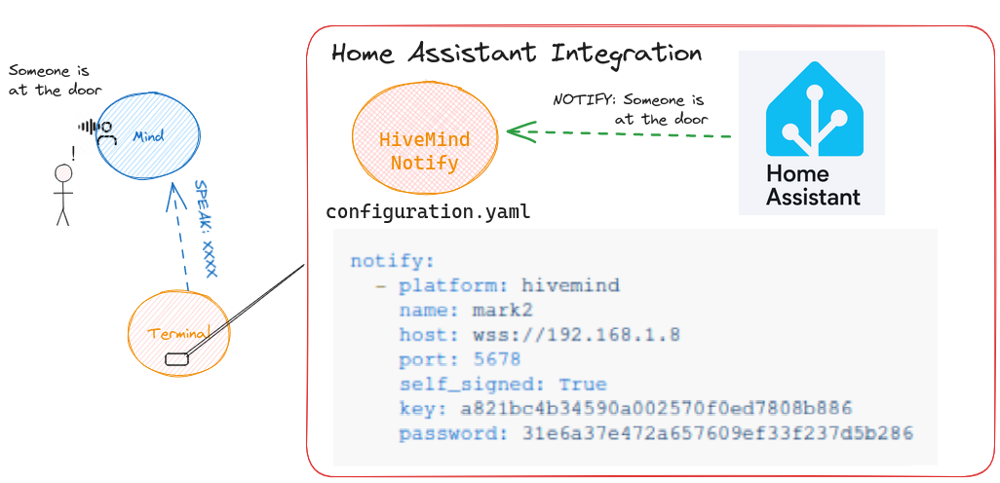

HomeAssistant Integration

This component will set up the following actions.
| Platform | Description |
|---|---|
notify |
Send a notification to a HiveMind Voice Assistant |
Install
Using HACS install from Github
HiveMind setup
create credentials and allow the speak message to be injected hivemind side
you can authorize message_types via the hivemind-core package
$hivemind-core allow-msg "speak"
Configuration
In configuration.yaml:
notify:
- platform: hivemind
name: mark2
host: wss://192.168.1.8
port: 5678
self_signed: True
key: a821bc4b34590a002570f0ed7808b886
password: 31e6a37e472a657609ef33f237d5b286
Then call notify.mark2 with a message you'd like the HiveMind Voice Assistant to speak.
Manual Installation
- Using the tool of choice open the directory (folder) for your HA configuration (where you find
configuration.yaml). - If you do not have a
custom_componentsdirectory (folder) there, you need to create it. - In the
custom_componentsdirectory (folder) create a new folder calledhivemind. - Download all the files from the
custom_components/hivemind/directory (folder) in this repository. - Place the files you downloaded in the new directory (folder) you created.
- Restart Home Assistant
- In the HA UI go to "Configuration" -> "Integrations" click "+" and search for "HiveMind Integration"
Using your HA configuration directory (folder) as a starting point you should now also have this:
custom_components/hivemind/translations/en.json
custom_components/hivemind/__init__.py
custom_components/hivemind/const.py
custom_components/hivemind/manifest.json
custom_components/hivemind/notify.py